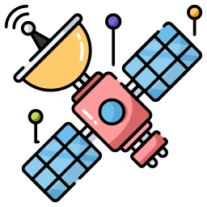

Explore Satellites
Discover amazing facts about satellites, play an interactive game, and test your knowledge with a fun quiz!

What is a Satellite?
Satellites orbit planets or stars. Some are natural, like moons, while others are man-made for communication, navigation, and more.
Uses of Satellites
Satellites are used for various purposes, such as communication, GPS, weather forecasting, and scientific research.
ISRO's First Satellite
Aryabhata, launched in 1975, was India's first satellite and helped lay the foundation for future space missions.
Space Quiz
What is the closest planet to the Sun?